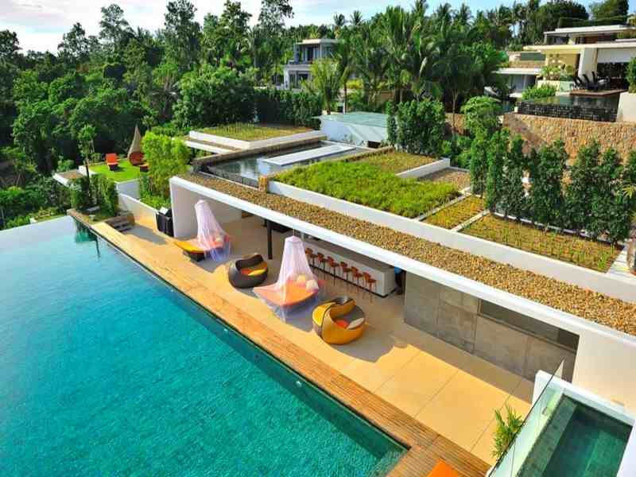
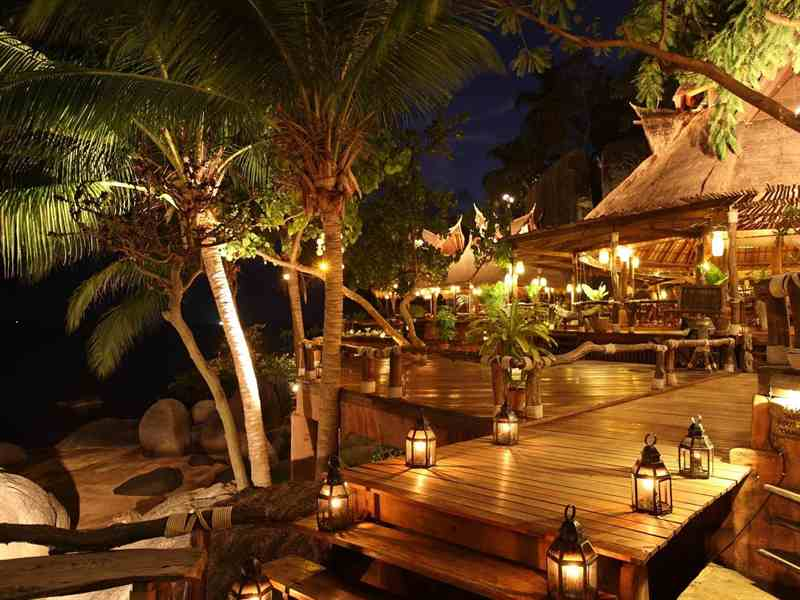
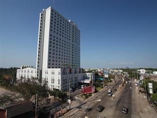

Top cities in Surat Thani
Hotels in Samui

Samujana Seven Bedroom Spectacular Pool Villa - Villa 12
- Area recommended for:
- beaches
-restaurants
-romance - Top attractions in the area:
-Wat Nuan Naram (2.5 Km / 30 min walk)
-Samui Crocodile Farm (2.7 Km)
-Big Buddha (3.0 Km)
-Prego Italian Restaurant (3.4 Km)
Hotels in Koh Phangan
Anantara Rasananda Koh Phangan Villa Resort & Spa
- Area recommended for:
- beaches
-restaurants
-romance - Top attractions in the area:
-Thong Nai Pan Noi Beach (0.1 Km / 2 min walk)
-Thong Nai Pan Yai Beach (1.0 Km / 12 min walk)
-Haad Khom Beach (4.9 Km)
-Chaloklum Bay (6.0 Km)
Hotels in Koh Tao

Koh Tao Cabana Hotel
- Area recommended for:
- beaches
-nightlife
-restaurants - Top attractions in the area:
-Sairee Beach (1.3 Km / 16 min walk)
-Mango Bay (2.1 Km / 26 min walk)
-Mae Haad (2.4 Km / 29 min walk)
-Jansom Bay (2.8 Km)
Hotels in Suratthani

Diamond Plaza Hotel Suratthani
- Area recommended for:
-business
-restaurants
-shopping - Top attractions in the area:
-Siam City Bank (4.6 Km)
-Miss Tuka Cappucino (4.8 Km)
-Night Market (4.8 Km)
-Taksin Hospital (5.3 Km)